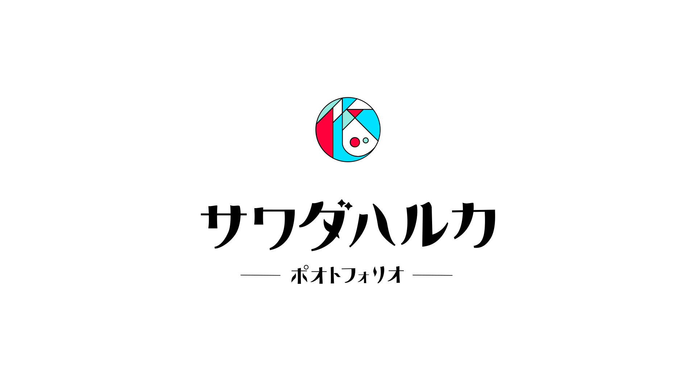

Portfolio / ポオトフォリオ
Web / UI デザイン
制作期間
2020年 7月〜（随時更新中）
制作形態
趣味 / 個人制作
使用したソフトウェア
Visual Studio Code (HTML / CSS / JavaScript) / Illustrator / Photoshop
作品説明
このポートフォリオサイトは、授業でJavaScriptは少しだけ習ったことがあったけれど、HTMLとCSSについては全く知らなかった私が、独学でコーディングまで行った作品です。昨今の状況をみて、紙媒体やPDF形式のポートフォリオを製作するよりも、Web媒体で製作する方が良いのではないかと考え、ポートフォリオ製作を始めました。気軽に作れる既存のポートフォリオサイトはシンプルなものが多く、私なりに納得のいかないところがあったので、それなら自分で作ればいいのではないかと思い、一から全て作り始めました。不格好ですが、実験中かつ随時更新中です。
『見やすさを第一に。楽しさを第二に。』
このポートフォリオは、この二点を重視して作成しています。テーマカラーは私の好きな色を用いておりますが、色の色差を重視して見やすい配色を行いました。このポートフォリオサイト自体は、レトロモダンな雰囲気を目指しています。（まだ、微妙ですが…）
また、スマホとPCなどハードウェアによる違いや、ブラウザによる違いなども考慮して、なるべくデザインが崩れないように、どんな媒体でも見やすいように工夫しました。（どうでしょうか。変なところがないと良いのですが。）
そして、既存のWebサイトを見て学び、サイトの動きなど真似したいと思ったところは取り入れました。特にトップページはワクワクするような見た目で楽しんでもらいたいと思ったので動きを作りました。
個々のページについて
今までの作品をまとめていたら、「Astrohoop」や「しんかい2020」など世界観が重要な作品があったので、それらは別途それぞれの作品に合った雰囲気になるようにページを表現しました。